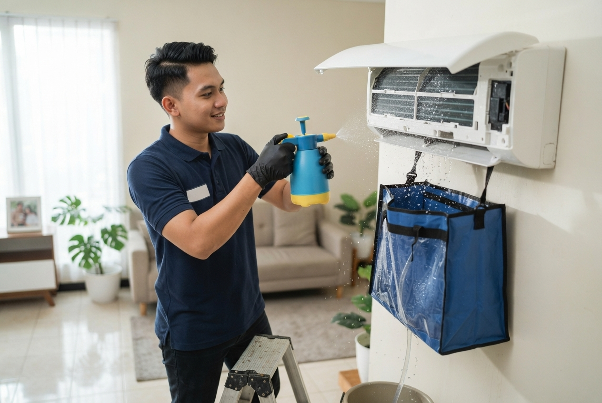
Service dan Cuci AC
Membersihkan unit dan memeriksa keluhan seperti AC kurang dingin, bau, atau menetes.
Pesan layanan →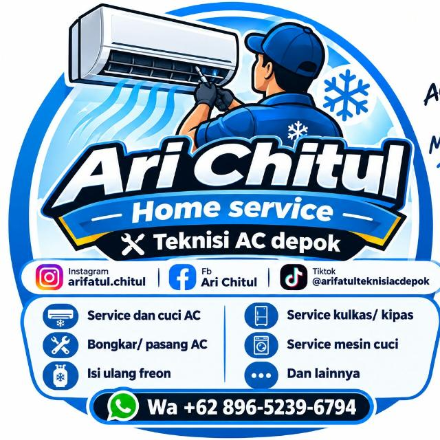
LAYANAN KAMI
Pilih layanan yang dibutuhkan. Jika belum tahu penyebab masalahnya, ceritakan keluhannya melalui WhatsApp.

Membersihkan unit dan memeriksa keluhan seperti AC kurang dingin, bau, atau menetes.
Pesan layanan →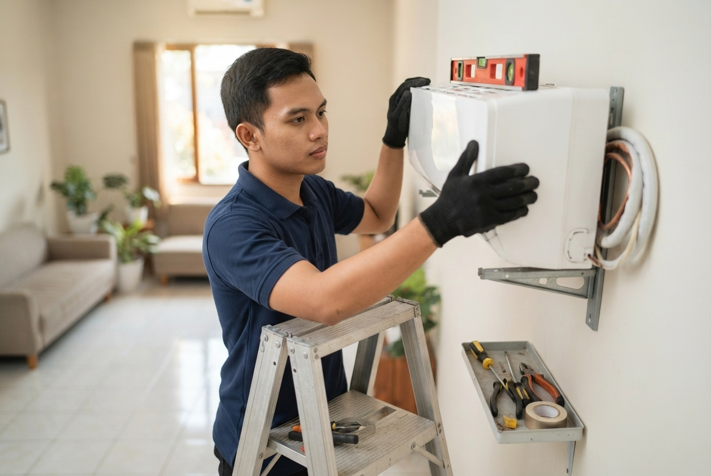
Layanan pelepasan dan pemasangan AC untuk pindah rumah atau pemasangan unit baru.
Pesan layanan →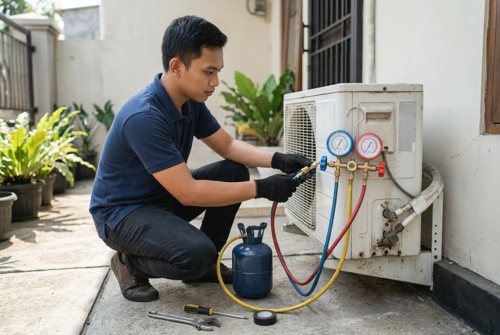
Pemeriksaan kondisi AC dan pengisian freon sesuai kebutuhan serta jenis refrigeran unit.
Pesan layanan →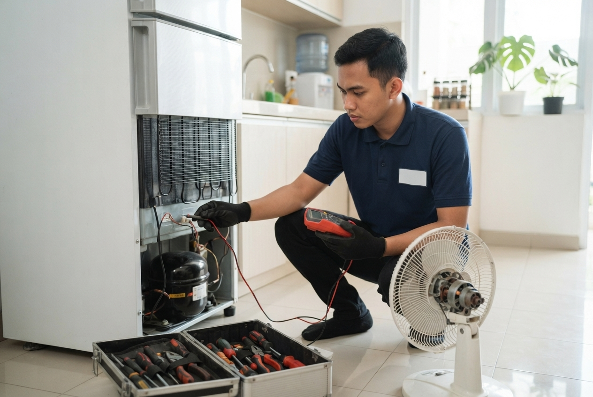
Pemeriksaan awal untuk kulkas tidak dingin, kipas mati, atau gangguan lainnya.
Pesan layanan →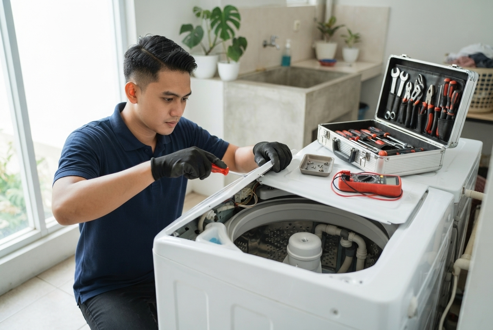
Pemeriksaan mesin cuci yang bermasalah saat mencuci, berputar, atau mengeringkan.
Pesan layanan →PORTOFOLIO
Beberapa contoh foto pekerjaan. Ganti gambar placeholder ini dengan dokumentasi asli Ari Chitul.
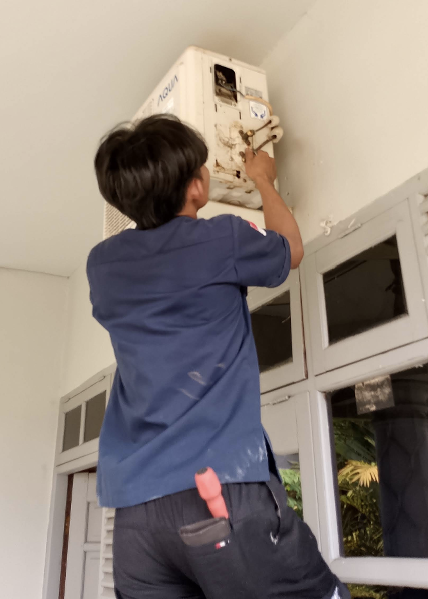
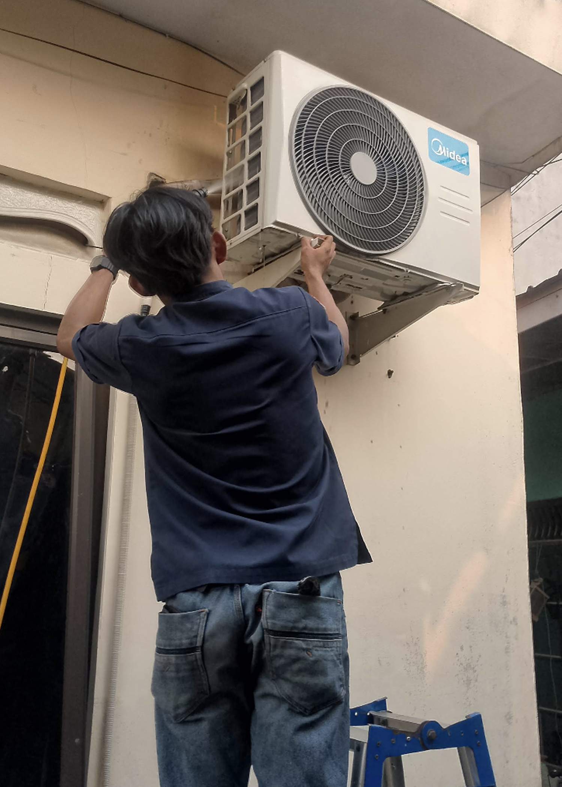
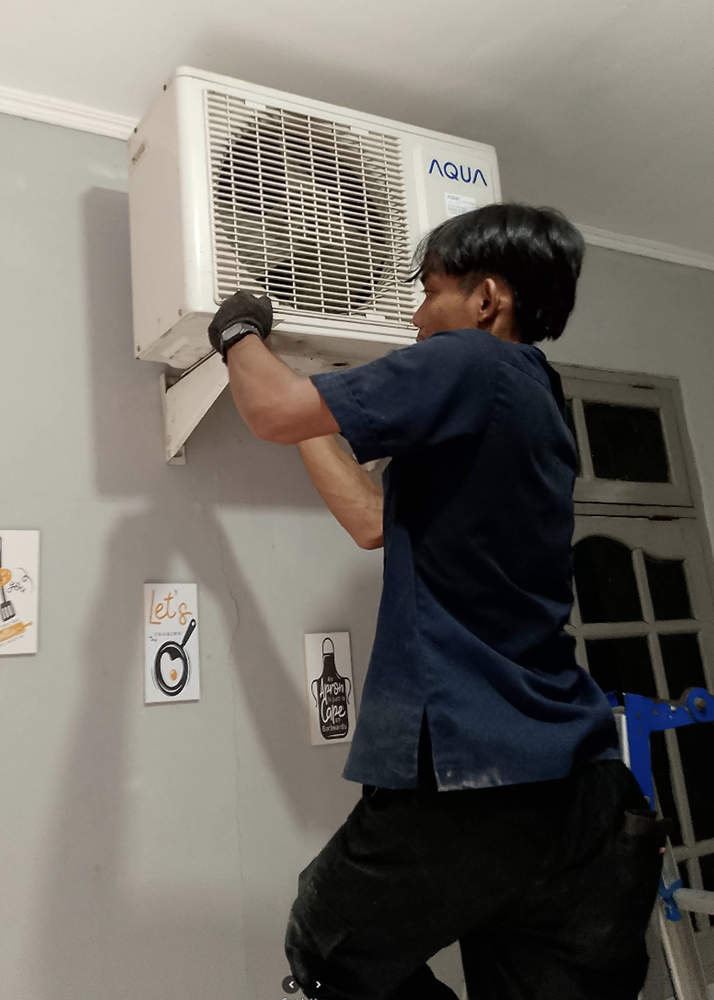
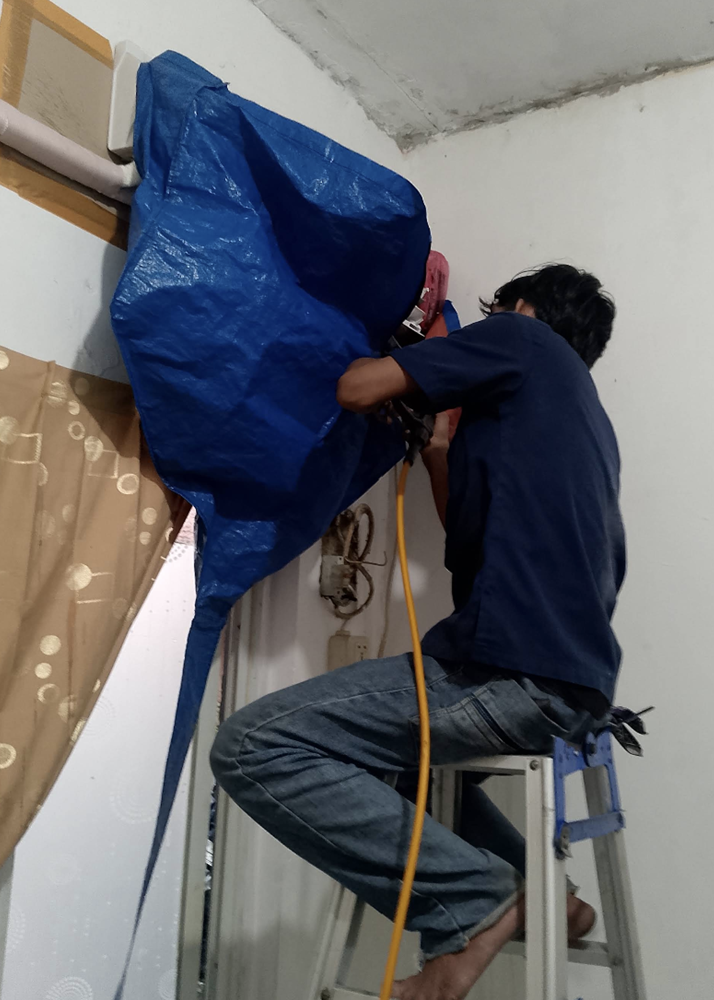
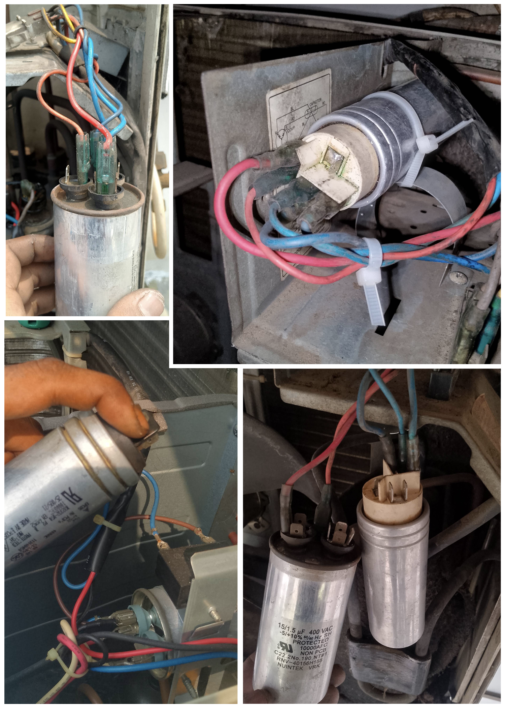
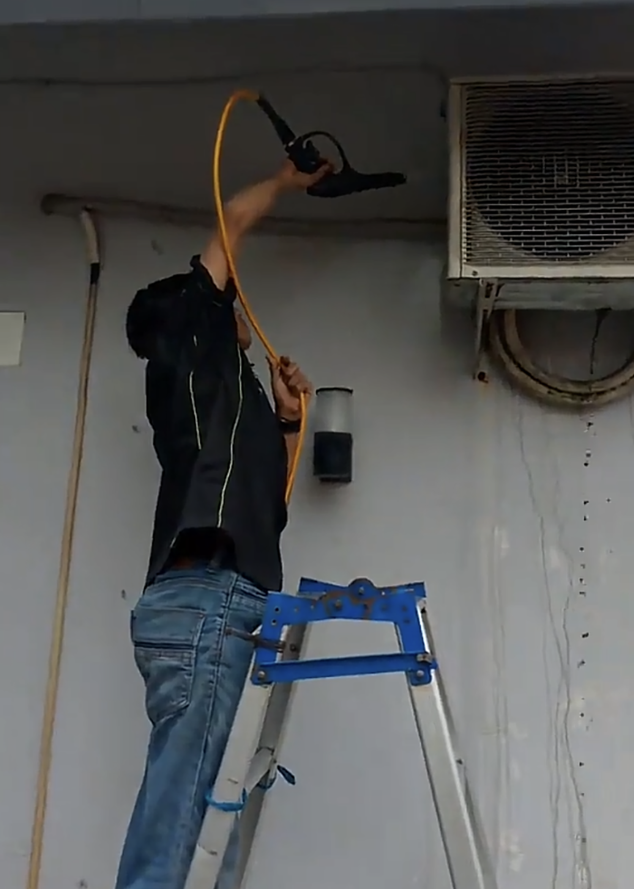
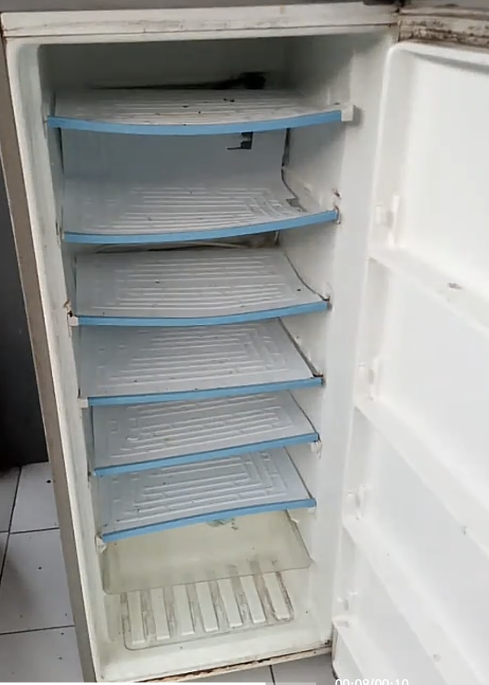
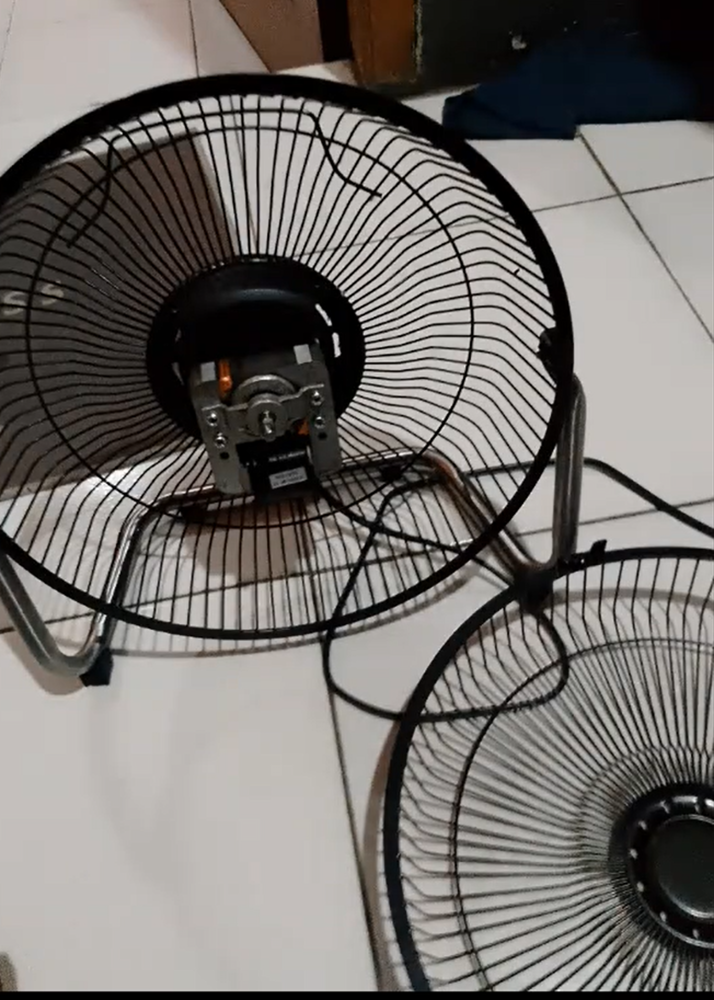
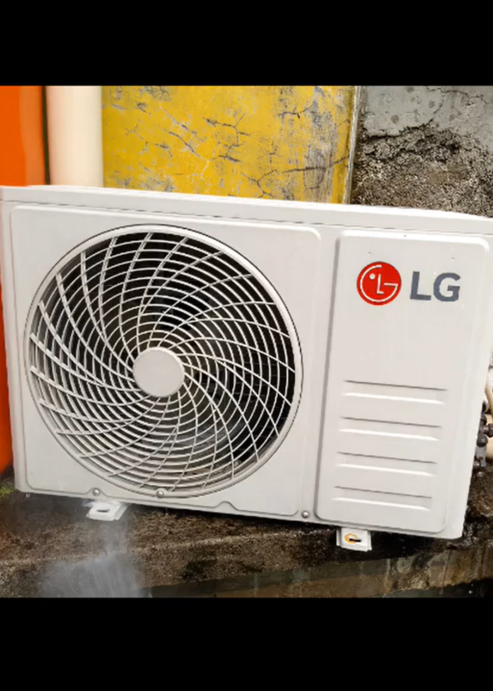
DAFTAR HARGA
Harga berikut mengikuti daftar yang tersedia. Untuk kondisi khusus dan biaya tambahan, silakan konfirmasi sebelum pengerjaan.
| Layanan | Keterangan | Harga |
|---|---|---|
| Cuci AC Split Standar | 0,5–1 PK | Rp85.000 |
| Cuci AC Split Standar | 1,5–2 PK | Rp115.000 |
| Cuci AC Inverter | Semua ukuran | Rp135.000 |
| Cuci AC Cassette / Standing | Per unit | Mulai Rp250.000 |
| Cuci Besar (Overhaul) | Turun unit | Mulai Rp400.000 |
| Jenis Freon | Tambah (Top Up) | Isi Full (Kuras) |
|---|---|---|
| Freon R22 | Rp175.000 | Rp300.000 |
| Freon R32 | Rp225.000 | Rp400.000 |
| Freon R410a | Rp275.000 | Rp450.000 |
| Layanan | Keterangan | Harga |
|---|---|---|
| Pasang AC (Unit Saja) | 0,5–1 PK | Rp300.000 |
| Pasang AC (Unit Saja) | 1,5–2 PK | Rp350.000 |
| Bongkar AC | Split (semua) | Rp175.000 |
| Bongkar + Pasang (Pindahan) | 0,5–1 PK | Rp450.000 |
* Harga dapat dikonfirmasi kembali berdasarkan kondisi unit, lokasi, dan kebutuhan pekerjaan.
Konfirmasi harga via WhatsApp ↗BUTUH BANTUAN TEKNISI?
Hubungi Ari Chitul untuk konsultasi layanan dan jadwal kunjungan.
HUBUNGI KAMI
Service AC Depok Ari Chitul
Jl. H. Salim No.58, Abadijaya, Kec. Sukmajaya, Kota Depok, Jawa Barat 16417